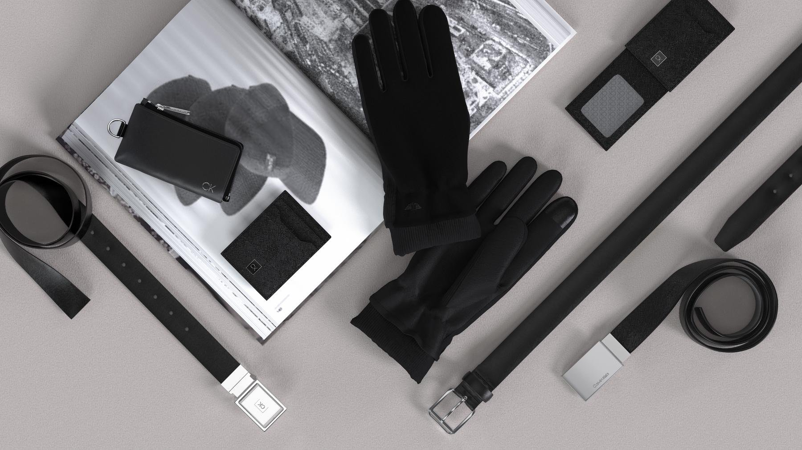
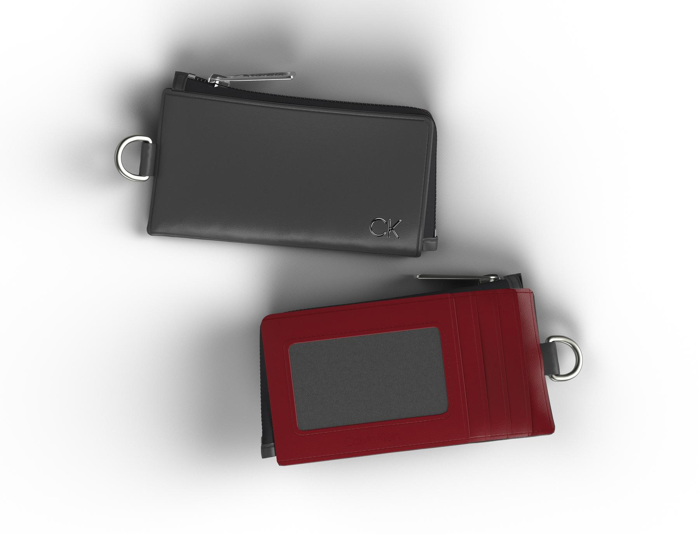
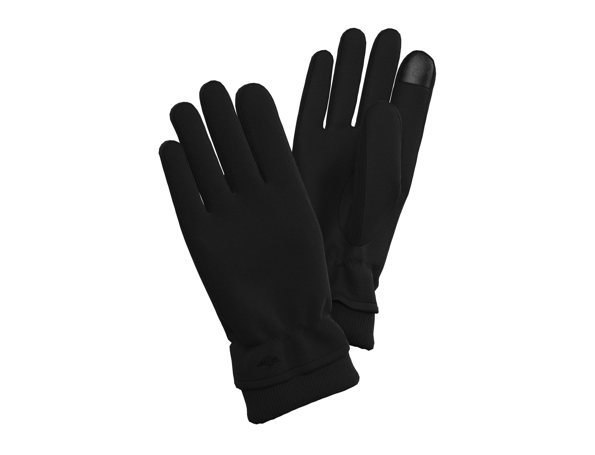
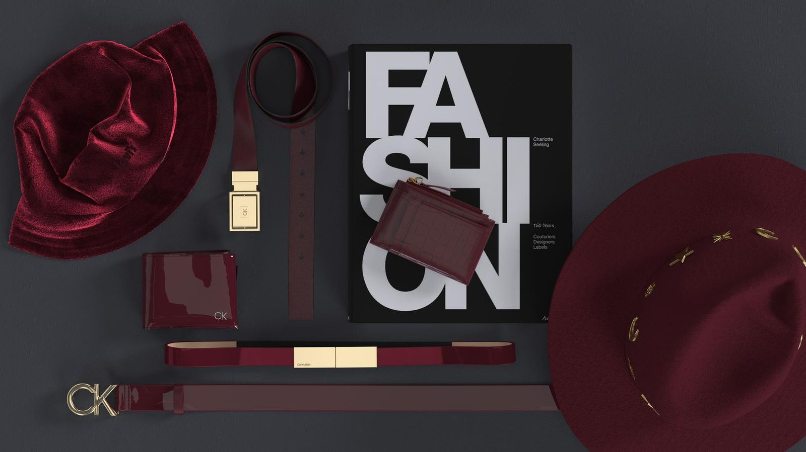
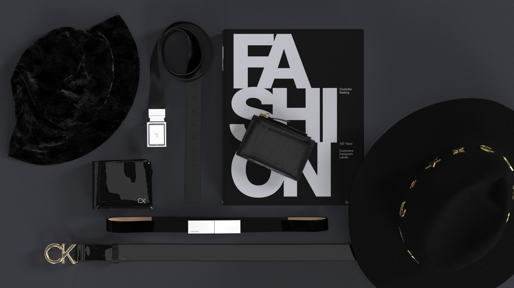

Pioneering Digital Product Creation
Leading enterprise-wide 3D implementation and AI innovation in accessories design

The Challenge
Major retail partners like Target were rapidly adopting 3D sampling across all departments. While standard practice in apparel, 3D was virtually unheard of in accessories—especially for mixed soft and hard goods like belts. We faced dual pressure: rising sampling costs and timelines internally, and retailer mandates for digital workflows we didn't yet have.
There was also a sustainability dimension that wasn't being talked about openly yet. Physical sampling in accessories is material-intensive — each round of strike-offs, prototypes, and revisions generates waste and shipping emissions that compound across hundreds of SKUs. Moving to digital wasn't just an efficiency play; it was a responsible design practice waiting to happen.
My mandate was clear but unprecedented: research and implement the right software solution, build proficiency in 3D design, establish an international team, and exceed partner expectations in a category where no one had done this before. I led this transformation from initial research through enterprise-wide adoption—selecting CLO 3D, training designers, and building the team that would modernize our entire product development pipeline.

The Vision & Solution
I assembled a trial group of designers to evaluate 3D software solutions while working directly with Target's 3D Product Creation Team. Through this collaborative process, we landed on CLO 3D as the platform that could handle the unique complexity of mixed-material accessories.
I hired a full-time 3D designer from one of our China offices, and together we established entirely new standards for the category—not just for RAA, but for Target's accessories division. Simultaneously, I partnered with VPs across product development, operations, and IT to secure buy-in for a company-wide digital transformation that would fundamentally change how we brought products to market.
The result was a 66% reduction in physical samples — fewer materials ordered, fewer prototypes shipped internationally, and a measurably lighter development footprint. This work laid the groundwork for the sustainable design practices I've continued to champion as a member of RAA's ESG Committee.





"Innovation distinguishes between a leader and a follower."
- Steve Jobs
The AI Future
AI is transforming how we work, and I've been at the forefront of exploring its applications at RAA. As part of our AI Trailblazers group, I'm implementing these tools across photography editing, design enhancement, and strategic research.
My philosophy is straightforward: AI is a tool, not a replacement. It's incredibly powerful for accelerating workflows and uncovering insights, but it can't replicate taste, creative vision, or strategic judgment. Those capabilities remain uniquely human—and they're more valuable than ever.
This is a fascinating moment for creative leadership. I'm focused on helping teams adopt AI in smart ways that enhance their work without losing the human creativity that makes it meaningful.


Next Case Study
Building a Vertical Brand